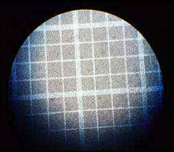

-
WBC Diluting Fluid
A sample of whole blood is mixed with a weak acid solution that lyses non-nucleated red blood cells. Following adequate mixing, the specimen is introduced into a counting chamber where the white blood cells (leukocytes) in a diluted volume are counted.
-

Normal Saline Solution
A solution of sodium chloride in purified water. This can usually be found on Electrolyte Solution, such as dextrose.+
-

Hayem's Solution
An isotonic fluid used for diluting blood samples in red blood cell counts. Contains mercuric chloride, sodium sulfate and sodium chloride.
-

Lugol's Solution
A solution of elemental iodine and potassium iodide in water
It is often used as an antiseptic and disinfectant, for emergency disinfection of drinking water, and as a reagent for starch
detection in routine laboratory and medical tests. -
Alcohol
a transparent, colorless, volatile liquid, used as a solvent and disinfectant, and as a topical antiseptic.